nion
nionMultiple Factors - SML adjust for risk
Multiple Factors - SML - Too good to be true?
SML is the second of the simplest factors. Let's take a look.
Contents
Load Data
Let's load the data from ..
load('../data_equity_list_us.mat'); load('../data_field_list.mat'); load('../data_historical_data_us.mat');
take data sample, load data & the list
index = datasample(1:1300,1000,'Replace',false);
px = fun_load_price(history_us, equity_list_us, index);
px = fun_clean_data(px);
list = equity_list_us(index,:);
load the Market Cap
cap_ts = fun_load_observations(history_us, equity_list_us, index,'cap');
let's take a look at the data
plot(cap_ts.dates,fts2mat(cap_ts));
datetick('x');
snapnow;
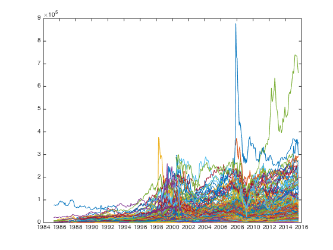 let's take a look at the full dataset in log scale
plot(cap_ts.dates,log(fts2mat(cap_ts)));
datetick('x');
snapnow;
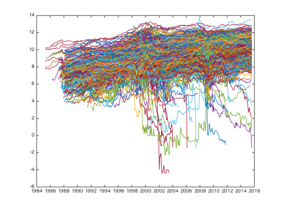 I can clean up the pb data for extreme value, but I prefer to leave it intact. Since we cleaned up price data, let's see what's the corresponding pb data looks like
cap_mat = fts2mat(cap_ts);
px_mat = fts2mat(px);
cap_mat(isnan(px_mat))=nan;
plot(cap_ts.dates,log(cap_mat));
datetick('x');
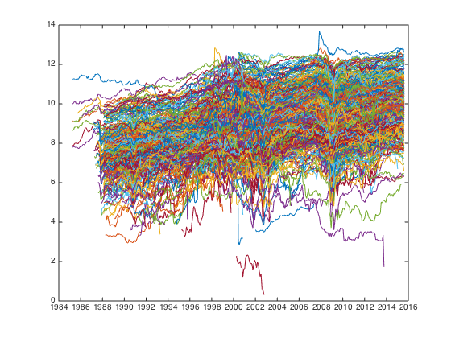 much better.
Check signal.
Does low valuation securites out perform on risk adjust basis? Let's compare portfolio constructed using only low pb stocks v.s. is equal weighted conterpart.
score_cap_ts = -fun_calculate_score(cap_ts,list,'fullsort',px); portfolio_weight_ts = fun_portfolio_weight_sector_neutral(score_cap_ts,'longonlyeq'); portfolio_longonly_rt_ts = fun_portfolio_return(px, portfolio_weight_ts); portfolio_weight_ts = fun_portfolio_weight_sector_neutral(score_cap_ts,'equalweight'); portfolio_equalweight_rt_ts = fun_portfolio_return(px, portfolio_weight_ts);
let's check the result.
plot(cumsum(portfolio_longonly_rt_ts)); legend('off'); hold on; plot(cumsum(portfolio_equalweight_rt_ts)); legend('off'); snapnow; [sqrt(12)*std(fts2mat(portfolio_longonly_rt_ts(50:end))) sqrt(12)*std(fts2mat(portfolio_equalweight_rt_ts(50:end)))] [sqrt(12)*sharpe(fts2mat(portfolio_longonly_rt_ts(50:end)),0) sqrt(12)*sharpe(fts2mat(portfolio_equalweight_rt_ts(50:end)),0)]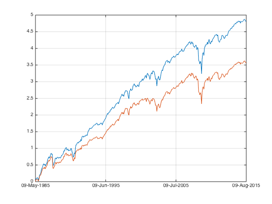
ans =
0.2246 0.1958
ans =
0.6482 0.5569
There are 10 bps improvement in sharpe.. reasonable i guess? small cap biased equal weight portfolio assumed higher risk as well, 18.5% v.s. 16%. on equal risk footing, small cap equal weighted index improve the return by 1.6% per annual.
let's take a look at the sector sorted portfolio
score_cap_ts = -fun_calculate_score(cap_ts,list,'sectorsort',px); portfolio_weight_ts = fun_portfolio_weight_sector_neutral(score_cap_ts,'longonlyeq',1); portfolio_longonly_rt_ts = fun_portfolio_return(px, portfolio_weight_ts); portfolio_weight_ts = fun_portfolio_weight_sector_neutral(score_cap_ts,'equalweight'); portfolio_equalweight_rt_ts = fun_portfolio_return(px, portfolio_weight_ts); % let's check the result. plot(cumsum(portfolio_longonly_rt_ts)); legend('off'); hold on; plot(cumsum(portfolio_equalweight_rt_ts)); legend('off'); hold off; snapnow; [sqrt(12)*sharpe(fts2mat(portfolio_longonly_rt_ts(50:end)),0) sqrt(12)*sharpe(fts2mat(portfolio_equalweight_rt_ts(50:end)),0)]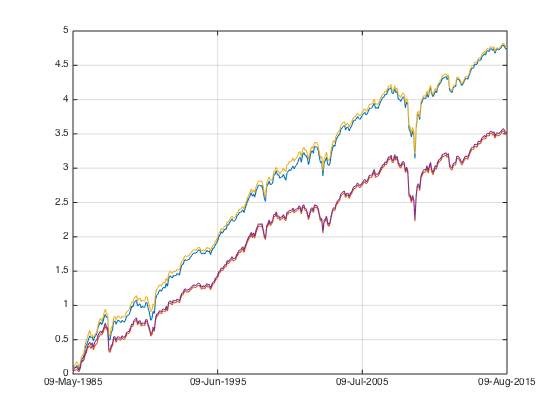
ans =
0.6569 0.5577
sector neutral improved nothing, unlike pb, market cap doesn't have a strong sector bias I guess.
Let's check pure long short factor portfolio against equal weighted market portfolio. Notice that it is not market neutral.
score_cap_ts = -fun_calculate_score(cap_ts,list,'sectorsort',px); portfolio_weight_ts = fun_portfolio_weight_sector_neutral(score_cap_ts,'longshort'); portfolio_longshort_rt_ts = fun_portfolio_return(px, portfolio_weight_ts); portfolio_weight_ts = fun_portfolio_weight_sector_neutral(score_cap_ts,'equalweight'); portfolio_equalweight_rt_ts = fun_portfolio_return(px, portfolio_weight_ts); % let's check the result. plot(cumsum(portfolio_longshort_rt_ts)); legend('off'); hold on; plot(cumsum(portfolio_equalweight_rt_ts)); legend('off'); snapnow; [sqrt(12)*sharpe(fts2mat(portfolio_longshort_rt_ts(50:end)),0) sqrt(12)*sharpe(fts2mat(portfolio_equalweight_rt_ts(50:end)),0)]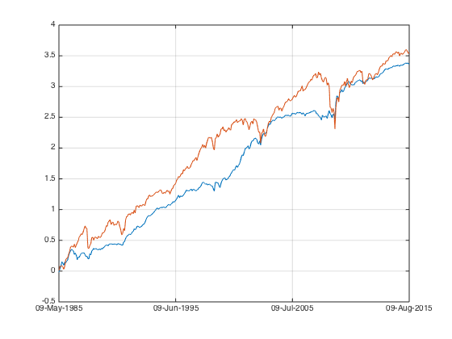
ans =
1.0493 0.5577
let's check the correlation.
corrcoef(fts2mat(portfolio_longshort_rt_ts(1:end)), fts2mat(portfolio_equalweight_rt_ts(1:end)))
ans =
1.0000 0.5636
0.5636 1.0000
THIS IS TOO GOOD TO BE TRUE!!!? The sharpe is way to high to make sense. this is also the source of equal weight outperformance. I shall investigate this case separately.
let's see how the top percentile securities do
portfolio_weight_ts = fun_portfolio_weight_sector_neutral(score_cap_ts,'topm',0.2); portfolio_topm_rt_ts = fun_portfolio_return(px, portfolio_weight_ts); portfolio_weight_ts = fun_portfolio_weight_sector_neutral(score_cap_ts,'topmlongonly',0.2); portfolio_topmlongonly_rt_ts = fun_portfolio_return(px, portfolio_weight_ts); % let's check the result. plot(cumsum(portfolio_topm_rt_ts)); legend('off'); hold on; plot(cumsum(portfolio_topmlongonly_rt_ts)); legend('off'); hold off; snapnow; [sqrt(12)*sharpe(fts2mat(portfolio_topm_rt_ts(50:end)),0) sqrt(12)*sharpe(fts2mat(portfolio_longshort_rt_ts(50:end)),0)] [sqrt(12)*sharpe(fts2mat(portfolio_topmlongonly_rt_ts(50:end)),0) sqrt(12)*sharpe(fts2mat(portfolio_equalweight_rt_ts(50:end)),0)]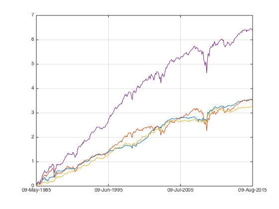
ans =
0.9279 1.0493
ans =
0.7408 0.5577
'Errh.. Huston we have a problem here..'
The long short factor portfolio's sharpe is very high (~0.9), the topm version of it, even though lower, is still high (0.6).
let's see if walkford test shed some light on this puzzle.
% first construct a equalweighted index portfolio_weight_eq_weight_ts = fun_portfolio_weight_sector_neutral(score_cap_ts,'equalweight'); portfolio_rt_ts = fun_portfolio_return(px, portfolio_weight_eq_weight_ts); benchmark = [100; 100*exp(fts2mat(cumsum(portfolio_rt_ts)))]; benchmark_ts = fints(px.dates, benchmark,'EqualWeightIndex'); plot(log(benchmark_ts)); legend('off'); hold on;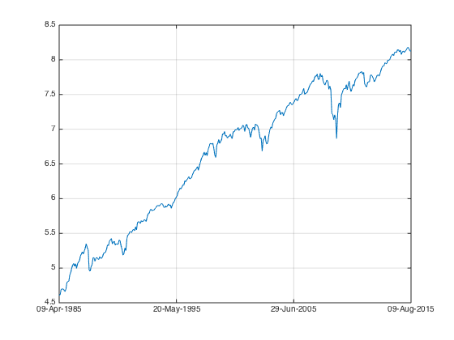
I load the same portfolio weight into the walkforward tester. this should give me zero.
portfolio_cap_ts = fun_sequential_backtest(100, px, benchmark_ts, portfolio_weight_eq_weight_ts,true); plot(log(portfolio_cap_ts)); legend('off'); hold off;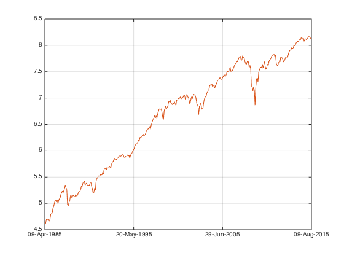
opps.. in fact..
plot(100*exp(cumsum(portfolio_rt_ts))); hold on; plot(fun_sequential_backtest(100, px, benchmark_ts, portfolio_weight_eq_weight_ts,false)) hold off; snapnow;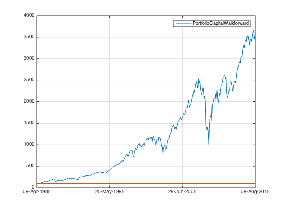
THIS ISSUE IS ADDRESSED. portfolio_weight*rt and walkforward test doesn't tie out... who is wrong? portfolio_weight is generated from score_ts, which is generated from rank of fundamental observation. portfolio_weight on both the long side and the short side sum up to one, this is how capital is being deployed. but what if there is portfolio weight, but no px data? nansum() would assume we get zero from this case, but in fact my defacto portfolio weight doesn't sum up to zero...
very good point! This problem is solved by enforcing that, when I generate the scores, I don't take those observation without executable price into consideration. So who is wrong between portfolio_weight & walkforard? portfolio_weight is wrong. this is good news!!!
I move back to update the first two post on Multifactors, now HML seems more reasonable. larger dataset problem disappeared,
This solved the difference between walkforward & weight*return, but it does really solve the problem with SML. To be specific, small cap biased index performance is reasonable(?), but long short factor portfolio seems too good to be true.
let's run a percentile analysis on cap
let's take a look at the relationship with N
score_cap_ts = -fun_calculate_score(cap_ts,list,'sectorsort',px); i=1; while i<=10 portfolio_weight_ts = fun_portfolio_weight_sector_neutral(score_cap_ts(50:end),'topmlongonly',0.1*i); portfolio_topm_rt_ts = fun_portfolio_return(px(50:end), portfolio_weight_ts); portplot = plot(fts2mat(cumsum(portfolio_topm_rt_ts))); portplot.Color(4) = 1 - 0.1*i; hold on; sharpe_top(i) = sqrt(12)*sharpe(fts2mat(portfolio_topm_rt_ts),0); i = i+1; end hold off; snapnow;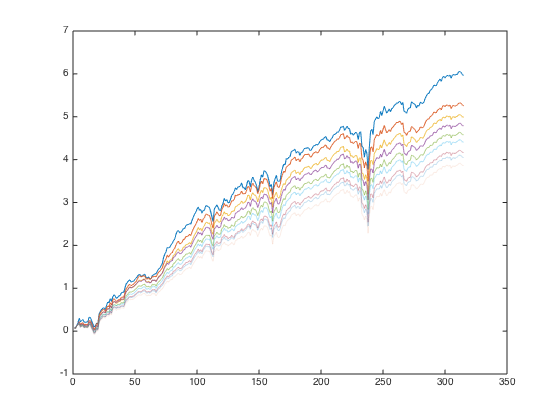
let's take a look at each percentile
i=1; while i<=10 portfolio_weight_ts = fun_portfolio_weight_sector_neutral(score_cap_ts,'topmn',0.1*i,0.1*(i-1)); portfolio_topm_rt_ts = fun_portfolio_return(px, portfolio_weight_ts); portplot = plot(fts2mat(cumsum(portfolio_topm_rt_ts))); portplot.Color(4) = 1 - 0.1*i; hold on; sharpe_top_percentile(i) = sqrt(12)*sharpe(fts2mat(portfolio_topm_rt_ts),0); i = i+1; end hold off; snapnow; plot(sharpe_top); hold on; plot(sharpe_top_percentile); snapnow;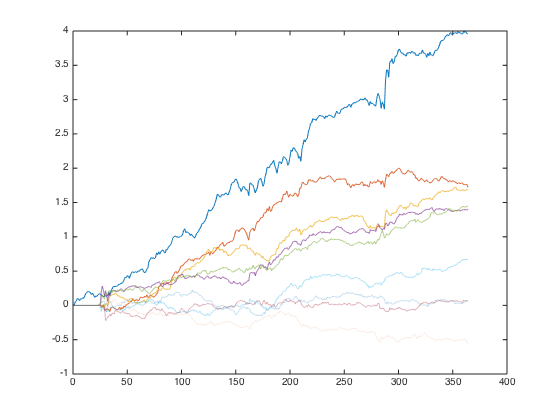 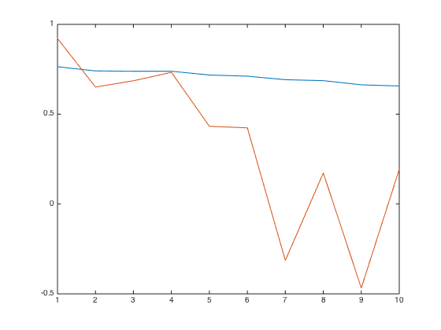
'problem' is with top 0.2.
Adjust for risk
I know that smallcap long only index is more volatile than equal weight index, is the sharpe due to assuming more market risk? let's take another look.
long only top 0.1
portfolio_weight_ts = fun_portfolio_weight_sector_neutral(score_cap_ts,'topmlongonly',0.5); portfolio_cap_ts = fun_sequential_backtest_partial(100, px(50:end), benchmark_ts(50:end), 1, portfolio_weight_ts(50:end),true); plot(log(portfolio_cap_ts)); legend('off'); hold on plot(log(benchmark_ts(50:end))); legend('off');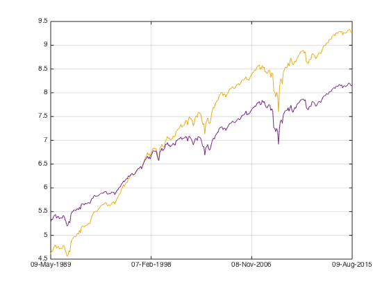
sharpe/return/vol
[sqrt(12)*sharpe(fts2mat(tick2ret(portfolio_cap_ts(50:end))),0) sqrt(12)*sharpe(fts2mat(tick2ret(benchmark_ts(50:end))),0)] [12*nanmean(fts2mat(tick2ret(portfolio_cap_ts(50:end)))) 12*nanmean(fts2mat(tick2ret(benchmark_ts(50:end))))] [sqrt(12)*std(fts2mat(tick2ret(portfolio_cap_ts(50:end)))) sqrt(12)*std(fts2mat(tick2ret(benchmark_ts(50:end))))] hedgeratio = std(fts2mat(tick2ret(portfolio_cap_ts(50:end))))/std(fts2mat(tick2ret(benchmark_ts(50:end))));
ans =
0.7558 0.6548
ans =
0.1982 0.1287
ans =
0.2627 0.1969
factor portfolio
portfolio_cap_factor_1_ts = fun_sequential_backtest_partial(100, px(50:end), benchmark_ts(50:end), 1, portfolio_weight_ts(50:end),false); portfolio_cap_factor_2_ts = fun_sequential_backtest_partial(100, px(50:end), benchmark_ts(50:end), hedgeratio, portfolio_weight_ts(50:end),false); plot(log(portfolio_cap_factor_1_ts)); legend('off'); plot(log(portfolio_cap_factor_2_ts)); legend('off'); snapnow; [sqrt(12)*sharpe(fts2mat(tick2ret(portfolio_cap_factor_1_ts)),0) sqrt(12)*sharpe(fts2mat(tick2ret(portfolio_cap_factor_2_ts)),0)]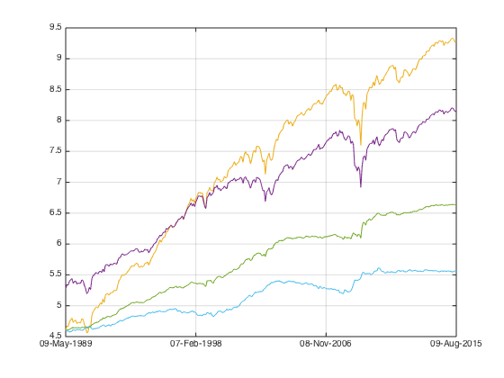
ans =
1.0397 0.5844
correlation
corrcoef(fts2mat(tick2ret(portfolio_cap_factor_2_ts)), fts2mat(tick2ret(benchmark_ts(50:end))))
ans =
1.0000 -0.2894
-0.2894 1.0000
better still I can ask the sequential backtester to adjust the hedge ratio dynamically.
portfolio_cap_factor_3_ts = fun_sequential_backtest_autoadjust(100, px(50:end), benchmark_ts(50:end), portfolio_weight_ts(50:end),false); plot(log(portfolio_cap_factor_3_ts)); legend('off'); snapnow; hold off; [sqrt(12)*sharpe(fts2mat(tick2ret(portfolio_cap_factor_1_ts)),0) sqrt(12)*sharpe(fts2mat(tick2ret(portfolio_cap_factor_2_ts)),0) sqrt(12)*sharpe(fts2mat(tick2ret(portfolio_cap_factor_3_ts)),0)]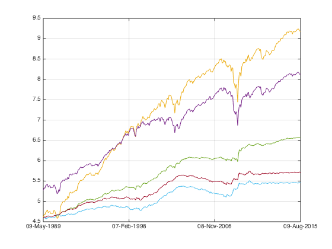
ans =
1.0397 0.5844 0.7482
correlation
corrcoef(fts2mat(tick2ret(portfolio_cap_factor_3_ts)), fts2mat(tick2ret(benchmark_ts(50:end))))
ans =
1.0000 0.0632
0.0632 1.0000
Let's run the percentile analysis again with autoadjust sequential test.
top N
i=1; while i<=10 portfolio_weight_ts = fun_portfolio_weight_sector_neutral(score_cap_ts,'topmlongonly',0.1*i); portfolio_cap_ts = fun_sequential_backtest_autoadjust(100, px(50:end), benchmark_ts(50:end), portfolio_weight_ts(50:end),false); portplot = plot(log(portfolio_cap_ts)); portplot.Color(4) = 1 - 0.1*i; hold on; sharpe_percentile(i) = sqrt(12)*sharpe(fts2mat(tick2ret(portfolio_cap_ts)),0); corr = corrcoef(fts2mat(tick2ret(portfolio_cap_ts)), fts2mat(tick2ret(benchmark_ts(50:end)))); correlation(i) = corr(1,2); i = i+1; end hold off; snapnow; plot(sharpe_percentile) snapnow; plot(correlation) snapnow;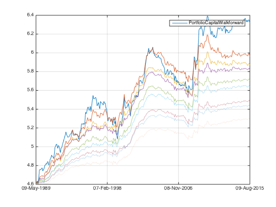 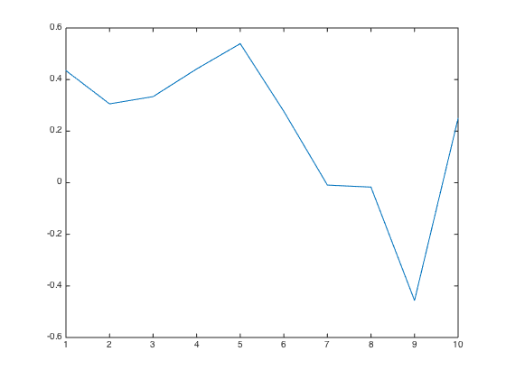 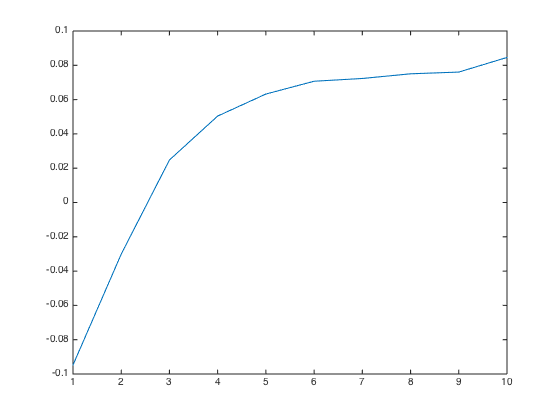
break into percentiles
i=1; while i<=10 portfolio_weight_ts = fun_portfolio_weight_sector_neutral(score_cap_ts,'topmnlongonly',0.1*i,0.1*(i-1)); portfolio_cap_ts = fun_sequential_backtest_autoadjust(100, px(50:end), benchmark_ts(50:end), portfolio_weight_ts(50:end),false); portplot = plot(log(portfolio_cap_ts)); portplot.Color(4) = 1 - 0.1*i; hold on; sharpe_percentile(i) = sqrt(12)*sharpe(fts2mat(tick2ret(portfolio_cap_ts)),0); corr = corrcoef(fts2mat(tick2ret(portfolio_cap_ts)), fts2mat(tick2ret(benchmark_ts(50:end)))); correlation(i) = corr(1,2); i = i+1; end hold off; snapnow; plot(sharpe_percentile) snapnow; plot(correlation) snapnow;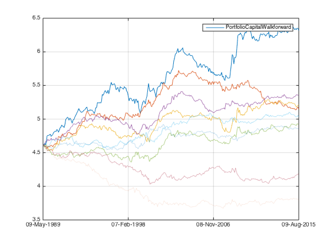 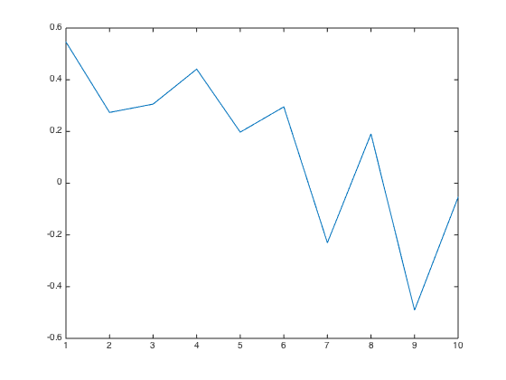 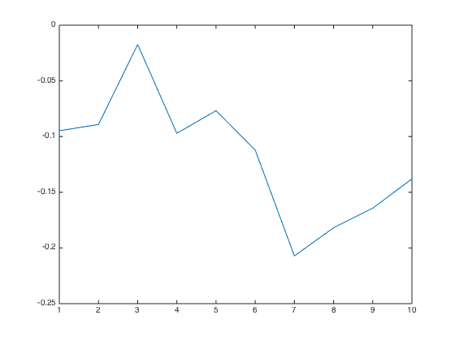
Pure factor with zero correlation ~~~, can't believe a problem bothered me for 7 months is actually so simple. I shall re-do the percentile analysis in previous posts.
QED